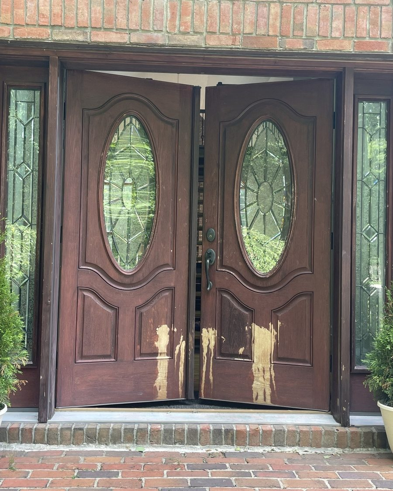
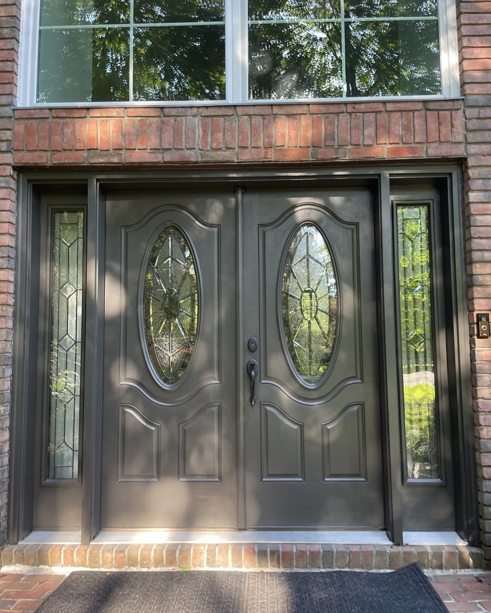

Residencial y comercial en Cleveland, Ohio. Mirá nuestros trabajos reales — antes, durante y después — y pedí tu estimado gratis.
No solo pintamos paredes — devolvemos la vida a tu casa.


Antes DespuésArrastrá la foto para comparar el antes y el después de estas puertas de entrada.
Si el Señor no edifica la casa, en vano trabajan los que la edifican.
— Salmo 127:1
Cada trabajo empieza igual: preparación completa — raspado, lijado, reparación y primer — antes de la primera mano de pintura. Así el acabado dura.
Estimado gratis al instante en línea, y el precio final lo confirmamos en la visita, sin compromiso.
Trabajo residencial y comercial en Cleveland y alrededores. En todos los servicios: protección completa del área, preparación y limpieza al terminar.
Todos estos son trabajos reales nuestros. Usá las flechas de cada foto para ver el proceso completo, y tocá una foto para verla grande.
Mirá más fotos de trabajos, novedades y recomendaciones de vecinos en nuestras redes.
Mandanos fotos de tu proyecto por WhatsApp, llamanos, o sacá tu estimado al instante en línea. El precio final lo confirmamos en la visita, sin compromiso.